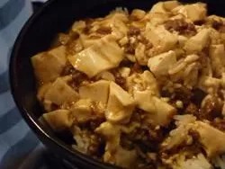

Mapotofu
Home

A chinese tofu dish know for it's strong flavour
Mapo tofu is a popular Chinese dish from Sichuan province. It consists of tofu set in a spicy sauce, typically a thin, oily, and bright red suspension, based on douban
(fermented broad bean and chili paste), and douchi (fermented black beans), along with minced meat, traditionally beef
ingredients
- 1 tablespoon cold water
- 1 teaspoon cornstarch
- ½ pound ground pork
- 1 tablespoon vegetable oil
- 1 tablespoon minced garlic
- 1 tablespoon minced fresh ginger root
- 1 (16 ounce) package firm tofu, cut into 1 inch pieces
- 5 tablespoons soy sauce
- 2 tablespoons hot bean sauce
- 1 teaspoon white sugar
- 3 green onions, chopped
- 1 teaspoon sesame oil
Steps to make
- Mix water and cornstarch in a small bowl; set aside.
- Brown ground pork in a small skillet over medium-high heat, about 5 minutes. Drain fat.
- Heat oil over medium-high heat in a large skillet or wok. Cook garlic and ginger in oil until fragrant,
about 1 minute. Stir in tofu and cook for 2 minutes. Season with soy sauce, hot bean sauce, and sugar; stir to combine.
- Stir in cooked pork and green onion. Sprinkle with cornstarch and water mixture; cook
and stir until thickened, about 2 minutes. Stir sesame oil into the thickened mapo tofu.